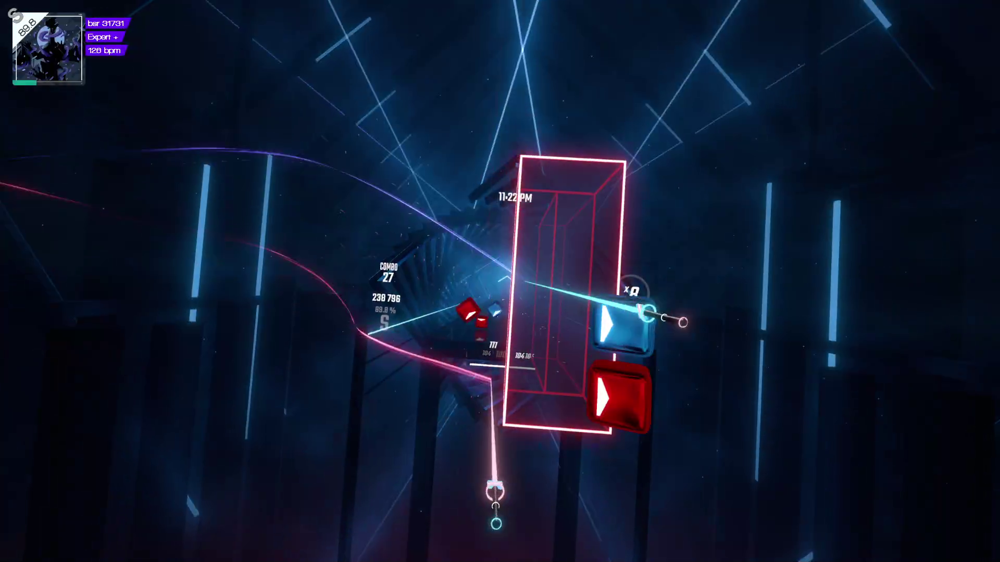
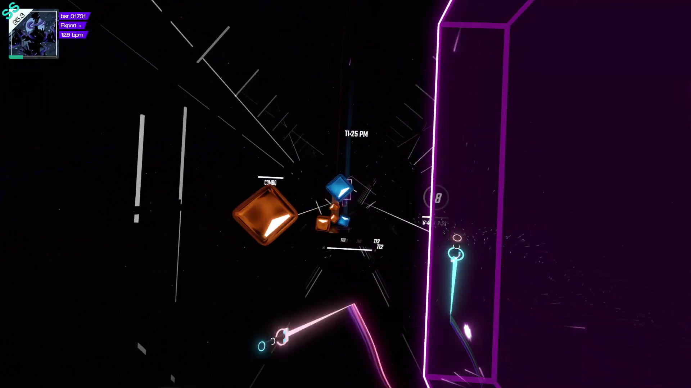

Beat saber is a game which involves reading little white triangles on colored blocks. Identifying shapes via contrast sounds a lot like typography so I thought I should take a crack at applying basic typography color theory in order to make beat saber easier to play (theoretically).
Note that I'm neither good at beat saber or at color theory. Do your own experiments and find what's best for you!
There are 2 colors of blocks, each color maps to which hand you use to slice the block with your saber. Additionally each block has a white triangle on it indicating the direction it needs to be sliced.
So we have the following requirements
The default colors are red and blue as shown in the image below. 
After some experimenting I ended up with the color #2986cc (blue) which has the complementary color #cc6f29 (orange). [1] is a good resource for finding complementary colors.
I then used [2] to make sure that both the colors pass the contrast check when used as the background for white text.
Finding colors which are complementary and pass the contrast test is the hardest part. I found starting with a blue to be the easiest. 
Finally you'll notice there's these big rectangular walls. They default to the same red as the left hand block which makes the blocks harder to see in front of them. But we can adjust that!
I find that walls seem to be more transparent with a lighter color. Therefore I picked #c128cc which has a 90° hue offset from my other two colors.
And we now have nice balanced colors in Beat Saber!